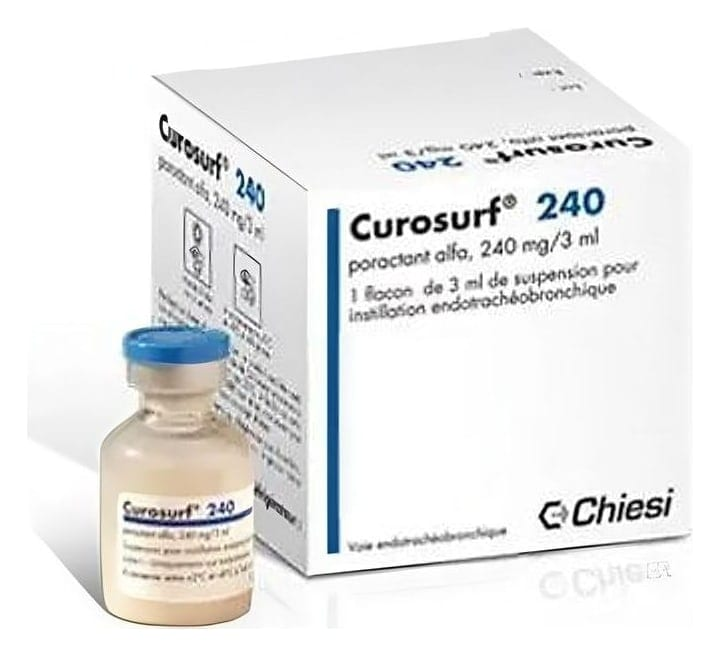

Curosurf 240 mg/3 ml Intratrakeal Süspansiyon İçeren Flakon, 1 Adet

Ne için kullanılır
KT · Bölüm 1CUROSURF tek doz halinde, erken doğan bebeklerin solunum güçlüğü sendromunun (RDS) tedavisi veya önlenmesinde nefes borusu içine (endotrakeal) veya bronş içine (endobronşiyal) uygulanan ve flakon içerisinde bulunan steril (mikrop içermeyen) bir süspansiyondur.
Akciğerler, solunumu kolaylaştıran ve akciğerlerin sönmesini yüzey gerilimini azaltarak önleyen surfaktan isimli bir madde ile kaplıdır. Bazı yenidoğan bebeklerde, özellikle de vaktinden önce doğan bebeklerde bu madde akciğerlerde yeterince bulunmadığından solunum güçlüğü oluşmakta ve Solunum Güçlüğü Sendromu (RDS) olarak tanımlanan tablo ortaya çıkmaktadır.
CUROSURF bu grup yenidoğan bebeklerde, doğal akciğer surfaktanı gibi işlev görerek erken doğan bebeklerin solunumu iyileşene ve bebek kendi surfaktanını üretmeye başlayıncaya kadar kullanılır.
CUROSURF her kutuda bir adet flakon içerir. CUROSURF beyazımsı sarı renkli steril süspansiyon içerir. CUROSURF şeffaf renksiz 3 mL’lik flakonlarda ambalajlanmıştır.